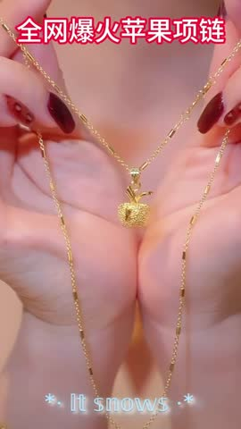
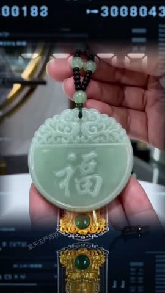
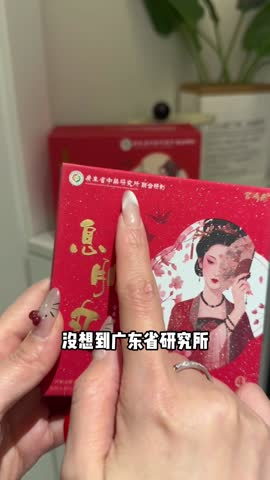
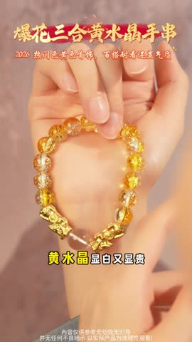
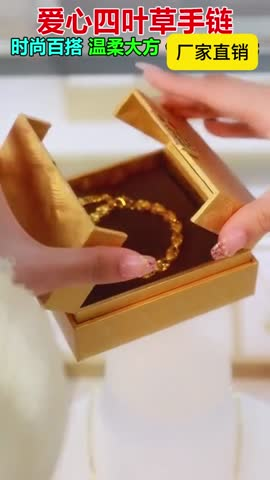
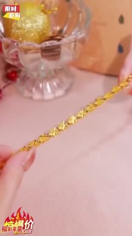

🎬Top5 素材关键帧拆解5/5 条已抽帧 · 6 帧对应 A→F 脚本节奏
TOP1 平平安安平安果项链 · 男女通用项链 CTR 12.82%|3s完播 68.9%|播放 25.0s
A穿搭痛点引入0-3s
B产品质感特写3-12s

C锁骨效果展示12-30sE品质背书50-65s
💡 脚本创意拆解与落地建议：该素材为平平安安“平安果”多戴法两用项链。主打“开运好意头+精致高奢质感”。开篇（0-3s）以“送妈妈送闺蜜不知道选什么”、“锁骨空空没福气”等传统寓意和穿搭痛点切入，高质感红色系滤镜年味与温情十足。中段（3-30s）特写呈现18K金电镀机身、手工微镶红色珐琅平安果与金叶的微距细节，流光溢彩；演示“平安果打开是爱心”的精巧多戴法变装奇观，引人驻足。随后由不同年龄层女性展示佩戴后对下颌线和锁骨的修饰。后半段（30s-65s）深入解读“岁岁平安、万事顺遂”的国潮文化寓意，展示买家好评卡片和佩戴不掉色的品质硬核背书。结尾（65s+）提供925银防过敏承诺、限时特惠，高性价比主打“百元内最体面的礼物”。
落地建议：1. 建议将“平安果翻转、吸铁石变爱心”这个神奇动作，在开篇前3秒用卡点音效极致渲染，拉满完播率。2. 在片尾强化“精美手写贺卡+高级首饰盒”的拆箱拆盒动作，激发礼赠需求。
生成一支 15 秒竖版商业广告视频，风格贴近国风饰品送礼短广告，温馨高级、有节日仪式感，适合用于春节情人节母亲节等节日送礼场景投放。
【整体风格】
高级国风轻奢质感，节奏明快，信息密集。采用"送礼选不出 + 锁骨空空显平淡"的双痛点切入，配合"一件饰品两种戴法的精巧惊喜"叙事，营造礼物有寓意 + 自戴有面子的强种草心智。整体色调走年节红金调，温暖喜庆但不土气。
【画面设定】
主体是一款 18K 金电镀红色珐琅平安果造型可变形吊坠项链，亮点是"平安果打开瞬间变成爱心"的机关设计，可作项链单戴也可挂在包包或钥匙扣作为挂饰。场景在朝南的中式简约客厅，背景是一面雾面奶白丝绒墙加一张原木色矮桌，桌上摆放一只精致的红丝绒翻盖首饰盒和一束乳白色洋桔梗。
【分镜结构】
开头阶段（第 0 到 3 秒）：极特写镜头从一只精致裸色美甲的纤细女性手指轻拈着这枚红色珐琅平安果起手，平安果在暖光下折射出红宝石般的釉彩光泽，缓缓拉到一位 28 岁优雅女性锁骨处略带失落的中近景：脖子空荡荡没有任何装饰，叠加横排居中信任状文案【18K 金电镀 · 微镶手工珐琅 · 抖音热卖】。
主体阶段（第 3 到 12 秒）：通过三组连续快切完成"痛点 → 解决 → 多戴法"叙事。
第一组（第 3 到 6 秒）：左右分屏对比镜头，左半屏是一位女性低头翻看礼盒满脸困惑、嘴里嘟囔"送妈妈送闺蜜不知道选什么"，右半屏是同一位女性站在镜前看着自己锁骨空空的衣领，神情失落。叠加竖排右侧文字【送礼选不出 锁骨空空显平淡】。
第二组（第 6 到 9 秒）：手指轻轻按压平安果中心，"咔哒"一声机关弹开，平安果对半绽放展露出内嵌的金色爱心吊坠，相机推近呈现机关的精巧咬合细节和金色镜面光泽。叠加横排居中卖点文案【一物两戴 平安果秒变爱心】。
第三组（第 9 到 12 秒）：连续快切三种使用场景：第一秒女性戴成颈链垂挂在白色衬衫领口下，第二秒系成手链绕在手腕上配着金属表带，第三秒挂在棕色皮质托特包侧面做包饰，配合摇头微笑回眸的优雅状态。叠加竖排右侧文字【颈链手链包饰 · 三戴百搭】。
结尾阶段（第 12 到 15 秒）：定格在产品最具吸引力的静态画面上：平安果项链优雅地躺在打开的红丝绒翻盖首饰盒里，旁边放着烫金祝福贺卡和深红色礼盒丝带，整体氛围烘托送礼仪式感。画面中下位置出现横排行动号召文案【限时立省 100 元 · 加赠烫金祝福贺卡 · 春节送礼首选】。
【镜头语言】
以稳定的特写和中近景为主，构图干净突出主体。多用固定机位配合利落的快切营造节奏，展示产品机关时用轻微推镜聚焦机关弹开的瞬间，展示痛点时用左右分屏静态构图增强对比。禁止 360 度环绕、剧烈推拉、夸张抖动等炫技运镜。
【文字排版】
文字少而精，信任状用横排居中位于画面顶部第 1 秒出现，痛点和多戴法说明用竖排叠加在画面右侧，行动号召用横排居中位于画面中下部屏幕高度 75 处。字体选用现代细宋体或方正榜书，带描金描边突出年节高级感，字号适中颜色走奶咖金色，不遮挡平安果主体和模特锁骨。
【人物要求】
出现两位女性形象。一位是 25 到 30 岁的优雅都市女性，五官立体、皮肤通透有光泽，穿着乳白色丝绒衬衫或米色针织衫，长发自然垂落，妆容走清透自然路线带哑光豆沙唇，重点展示手部摘戴、机关弹开、上身展示的真实动作。另一位是同款女性的镜中倒影，呈现失落空荡的痛点状态。手部要求纤细修长、裸色美甲、可戴一枚简约金属指环增加精致感。
【声音要求】
背景音乐选用轻快暖调的中式新民乐，融入古筝和钢琴元素，BPM 控制在 85 到 95，营造温暖年节氛围。搭配一名温柔知性女声解说（音色参考微软晓晓知性版），节奏与画面剪辑同步，开头用"姐妹们今年新年送礼终于不踩雷了"作为钩子，中段口播"平安果秒变爱心"、"三戴百搭"的核心卖点。加入清脆音效：机关弹开的咔哒声、金属链条轻碰的叮当声、礼盒翻盖的轻吸声，增强真实感和质感。
【画质要求】
4K 高清画质，商业广告级别布光。色彩走年节红金主调配合奶白背景的高级反差，光线均匀偏向暖白侧逆光，能清晰展现平安果珐琅的釉彩光泽、18K 金电镀的金属反光、爱心机关的精巧咬合。人物皮肤质感自然不过度磨皮，空间逻辑正确不穿帮。
【避免】
避免卡通或动漫风格、避免过度浓烈的大红俗气配色、避免廉价塑料感、避免画面昏暗、避免镜头剧烈晃动或炫技 360 旋转、避免人物表情夸张做作或面部变形、避免文字过多遮挡主体、避免画面里出现任何乱码字幕或水印、避免与年节送礼高级氛围不符的脏乱场景。
下面这一段是从原片提取的真实口播文案，可以直接用来做配音底稿或字幕原文。
给大家看看有钱人戴的项链长什么样把你脖子上那些假项链啊我这边呢送你们一批啊真的这个不是什么瑕疵品啊都是我里面卖到一两万一条的呢
TOP2 【师傅推荐】2026款青绿色吊坠精工雕刻时尚吊坠男女随身挂件 · 男女通用颈饰 CTR 35.00%|3s完播 50.9%|播放 59.7s
A穿搭痛点引入0-3s

C锁骨效果展示12-30sD多风格搭配30-50s
E品质背书50-65s
💡 脚本创意拆解与落地建议：该素材为师傅推荐精工雕刻墨绿玉石时尚吊坠挂件。视频紧扣“神明庇佑好寓意+匠人精雕细琢”的传统国潮风。开篇（0-3s）以“求学求职道路迷茫”、“想选一件寓意美好的本命年吊坠”的情感、灵性诉求开辟视觉。中段（3-30s）柔光灯下展示高品质墨玉吊坠的雕刻肌理与饱满光泽，推至微距特写，师傅手持工具雕凿细节，放大手作温度与传统匠心；模特佩戴，玉石在衣襟间高冷出尘，瞬间拉高气场和佩戴视觉溢价。后半段（30s-65s）将佩戴融入汉服旗袍、中式茶服和日常白衬衫，解读“诸事顺意、平安无忧”的美好寓意，出具国家宝玉石质检证书作为无可辩驳的强品质背书。收尾（65s+）以“买吊坠送纯手工红绳挂链”、大师开光包邮等为利益驱动，高性价比锁定客群。
落地建议：1. 建议在第2-3秒展示用手电筒照透玉石，展示其内部通透的温润质地和墨绿色泽，视觉震撼感极佳。2. 在收尾部分，特写高档复古红绸布包、手写金榜题名卡片，满足买家对仪式感的尊贵需求。
生成一支 15 秒竖版商业广告视频，风格贴近国风玉石饰品短广告，沉稳高级、有匠人故事感，适合用于本命年开运护身或求学求职场景的内容种草投放。
【整体风格】
传统国潮匠心质感，节奏沉稳有力，信息密集。采用"求学求职迷茫 + 想要一件寓意美好的护身吊坠"的灵性诉求切入，配合"师傅亲手精雕 + 玉石神明庇佑"的故事感叙事，营造一物一证一开光的稀缺心智。整体色调走暗木金丝的禅意调。
【画面设定】
主体是一款 2026 款青绿墨玉精雕吊坠挂件，玉石呈深邃的菠菜绿带黑墨纹理，表面雕琢着貔貅或如意纹样，配一根深咖色编织绳。场景在禅意茶室，背景是一面暗色木格栅墙、一张原木雕花长桌、桌上摆放着青铜香炉檀香缭绕、一盏明黄色暖光台灯，整体氛围庄重静谧。
【分镜结构】
开头阶段（第 0 到 3 秒）：极特写镜头从一双沟壑分明的师傅手起手，他正用细小的雕刻刀在墨玉吊坠表面雕凿最后一笔，木屑微微飘落，玉石在暖光下泛出温润光泽。叠加横排居中信任状文案【天然墨玉认证 · 师傅亲手精雕 · 一物一证一开光】。
主体阶段（第 3 到 12 秒）：通过三组连续快切完成"灵性诉求 → 匠心开光 → 上身气场"叙事。
第一组（第 3 到 6 秒）：呈现一位 28 岁年轻男性穿着白衬衫坐在书桌前看着电脑屏幕揉太阳穴皱眉的画面，旁边摊着一沓笔试简历，画面叠加竖排右侧文字【求学求职路迷茫 · 想要一份美好寓意】。
第二组（第 6 到 9 秒）：镜头切回师傅工作台，师傅双手捧着这枚青绿吊坠在檀香炉前缓缓画三圈做开光仪式，背景香烟袅袅，玉石在烛光下泛出温润绿光。叠加横排居中卖点文案【师傅亲手开光 · 玉石灵气长伴】。
第三组（第 9 到 12 秒）：连续快切两组上身效果。第一秒同一位男性已经戴上这枚吊坠，穿白衬衫站在窗前回眸，玉石垂挂在领口下方泛出高冷光泽。第二秒同一款吊坠也可由女性佩戴，挂在新中式立领连衣裙上展现知性气质。叠加竖排右侧文字【男女通戴 · 一坠提升气场】。
结尾阶段（第 12 到 15 秒）：定格在产品最具仪式感的静态画面上：青绿墨玉吊坠静静躺在暗红色木质礼盒里，旁边整齐摆放着烫金鉴定证书和檀香木开光符。画面中下位置出现横排行动号召文案【限量发售 · 一物一证一开光 · 加赠檀香木开光符】。
【镜头语言】
以稳定的特写和中近景为主，构图干净，多用固定机位配合慢推镜营造仪式感，展示玉石细节时用微距特写聚焦雕刻纹理和玉质光泽，展示痛点时用固定中景让观众充分共情。禁止 360 度环绕、剧烈推拉、夸张抖动等炫技运镜。
【文字排版】
文字少而精，信任状用横排居中位于画面顶部，痛点和卖点用竖排叠加在画面右侧，行动号召用横排居中位于画面中下部屏幕高度 75 处。字体选用毛笔行书或方正榜书，字号适中颜色走描金色或朱红色，不遮挡玉石主体和模特面部。
【人物要求】
出现一位 50 到 65 岁的师傅手部，沟壑分明指甲修剪整齐有岁月感和手工艺人的可信度。同时出现一位 28 岁年轻男性表演自然不夸张，穿着白衬衫展现求学求职的真实焦虑。另出现一位 28 到 35 岁知性女性展示女款佩戴效果，穿着新中式立领连衣裙气质优雅。
【声音要求】
背景音乐选用国风古琴和洞箫元素的禅乐，BPM 控制在 60 到 75，营造静谧庄重的氛围。搭配一名深沉有故事感的中年男声解说（音色参考微软云健），节奏沉稳缓慢，开头用"这件吊坠师傅亲手雕了七天才开光"作为钩子，中段口播"墨玉灵气 · 一物一证 · 男女通戴"的核心卖点。加入清脆音效：雕刻刀凿玉的细微沙沙声、檀香木鱼的低沉敲击、玉石轻碰丝绳的温润声响。
【画质要求】
4K 高清画质，商业广告级别布光。色彩走暗木金丝主调配合青绿玉石的高级反差，光线均匀偏向暖黄顶光，能清晰展现墨玉的雕刻纹理、玉质光泽、雕琢的精微细节。人物皮肤质感自然，能看到师傅手部的细腻沟壑，空间逻辑正确不穿帮。
【避免】
避免卡通或动漫风格、避免廉价玻璃感、避免画面过亮或过白显得普通、避免镜头剧烈晃动或炫技 360 旋转、避免人物表情夸张做作、避免文字过多遮挡玉石、避免画面里出现任何乱码字幕或水印、避免与禅意国潮氛围不符的现代电子元素。
下面这一段是从原片提取的真实口播文案，可以直接用来做配音底稿或字幕原文。
就在刚才,现场已经开始封箱,后一批人在桌面上,编号逐一核对,名单逐个画勾,念到你这一行的时候,流程突然停住了,因为这本来不该属于你,它原本已经被安排给别人,包装单都打好了,就差贴上一张包装单。
TOP3 广东省中药研究所宫鸿燕禧珠麝香合香珠手串赠欢宜香手串 · 男女通用手串 CTR 4.51%|3s完播 62.5%|播放 8.5s
B产品质感特写3-12s

C锁骨效果展示12-30sF促销引导下单65s+
💡 脚本创意拆解与落地建议：该素材为广东省中药研究所禧珠麝香“宫鸿燕禧珠”合香手串。主打“权威科研背书+古典香道美学”的高溢价定位。开篇（0-3s）在悠扬空灵古琴声下，展现中式素雅茶服博主手持香珠、香烟袅袅的古典文化钩子，静心养神，瞬间吸引香友及国潮爱好者。中段（3-30s）聚焦于香珠表面纯天然药材禧珠微距特写与手工微镶隔珠工艺，强调药用成分的持久纯手工揉制技艺和名厂风范；随后演示博主在手腕盘玩、拨动、抚玩等多手部生动特写。后半段（30s-65s）阐释中药古方“行气提神、安神静心、辟邪纳福”的传统健康价值，展示广东省中药研究所专家出镜、中药检测合格报告、大师监制授权书等无可挑战的最高硬背书。结尾（65s+）买香珠送福袋、送专属中药香囊等多赠品组合促单，用顶级品质背书衬托下的超强“物超所值”高性价比，完成临门一脚。
落地建议：1. 建议将“专家在实验室研发把关”与“博主手持香珠轻转”做双框特写，放在开篇前3s展示，瞬间区别于全网普通文玩，拉升权威度。2. 收尾可突出精美红木复古抽拉礼盒和防伪证书的拆箱演示，拉满“送给长辈、送自己安神”的孝心/暖心附加值。
生成一支 15 秒竖版商业广告视频，风格贴近高端国风香道短广告，沉稳雅致、有文人书香气，适合用于香道爱好者和国潮文化群体的内容种草。
【整体风格】
古典香道美学质感，节奏舒缓有禅意，信息密集。采用"中年焦虑失眠 + 想要一份静心养神的随身雅物"的情绪痛点切入，配合"广东省中药研究所权威背书 + 古法手工揉制"的科研故事感叙事，营造可佩戴的文化雅器稀缺心智。整体色调走暗木金丝带檀香烟雾的禅意调。
【画面设定】
主体是一款由广东省中药研究所宫鸿燕禧珠合香珠手串，每颗香珠由麝香沉香等多味中药材纯手工揉制而成，颗粒饱满呈深咖色带细微纹理，配以小巧的银色隔珠和明黄色编织绳。场景在书香茶室，背景是一面深色实木格栅墙、一张紫檀木茶桌、桌上摆放着青瓷茶具、一缕檀香从香炉中袅袅升起。
【分镜结构】
开头阶段（第 0 到 3 秒）：极特写镜头从一串香珠在悠扬空灵的古琴声中缓缓出现，一位身着中式素雅茶服的博主手持香珠靠近鼻尖轻嗅，闭眼陶醉，背景香烟袅袅。叠加横排居中信任状文案【广东省中药研究所联名 · 古法手工揉制 · 一串养神七味中药】。
主体阶段（第 3 到 12 秒）：通过三组连续快切完成"焦虑痛点 → 科研背书 → 盘玩日常"叙事。
第一组（第 3 到 6 秒）：呈现一位 35 岁中年人深夜在床上辗转反侧揉太阳穴的画面，旁边手机屏幕显示凌晨两点。叠加竖排右侧文字【加班焦虑 · 失眠浮躁 · 心烦气躁】。
第二组（第 6 到 9 秒）：微距镜头展示香珠表面的天然药材微粒纹理，配合手工微镶银色隔珠的精致咬合，画面切到广东省中药研究所的研发实验室一角，研究员穿着白大褂在实验台前称量药材。叠加横排居中卖点文案【中药研究所联名 · 七味中药纯手工揉制】。
第三组（第 9 到 12 秒）：连续快切三种使用场景：第一秒博主腕间盘玩香珠，手指捻动每颗珠子的细节特写；第二秒博主端坐茶席煮茶，手腕戴着香珠随着泡茶动作晃动；第三秒博主翻看书本配合香炉熏香的禅意瞬间。叠加竖排右侧文字【腕间盘玩 · 静心养神 · 雅物随身】。
结尾阶段（第 12 到 15 秒）：定格在产品最具仪式感的静态画面上：香珠手串静静躺在打开的深咖色木质礼盒里，旁边整齐摆放着一只小小的合香囊和广东省中药研究所的烫金认证证书。画面中下位置出现横排行动号召文案【限量发售 · 加赠合香囊 · 中药研究所亲签证书】。
【镜头语言】
以稳定的特写和中近景为主，构图干净，多用固定机位配合慢推镜营造禅意，展示香珠细节时用微距特写聚焦药材纹理和银隔珠工艺，展示痛点时用固定中景让观众充分共情。禁止 360 度环绕、剧烈推拉、夸张抖动等炫技运镜。
【文字排版】
文字少而精，信任状用横排居中位于画面顶部，痛点和卖点用竖排叠加在画面右侧，行动号召用横排居中位于画面中下部屏幕高度 75 处。字体选用毛笔楷书或方正榜书，字号适中颜色走描金色或朱红色，不遮挡香珠主体和模特动作。
【人物要求】
出现一位 30 到 40 岁中式茶服博主，五官清秀气质沉稳，长发挽成简约低马尾或挽发髻，无妆或裸妆，重点展示手腕盘玩、嗅闻香珠、煮茶翻书的真实禅意动作。另出现一位 35 岁中年焦虑人物展现痛点状态。手部要求纤细干净指甲修剪整齐，可戴细款木质手镯增加文人质感。
【声音要求】
背景音乐选用古琴洞箫钵音的禅乐元素，BPM 控制在 55 到 70，营造静心养神的氛围。搭配一名沉稳低沉的中年男声解说（音色参考微软云健讲经版），节奏缓慢有故事感，开头用"中药研究所联名的香珠 一串养神七味中药"作为钩子，中段口播"古法手工 · 静心养神 · 雅物随身"的核心卖点。加入清脆音效：香珠轻碰的木质回响、檀香木鱼的低沉敲击、瓷茶具碰撞的清脆声。
【画质要求】
4K 高清画质，商业广告级别布光。色彩走暗木金丝主调配合檀香烟雾的禅意氛围，光线均匀偏向暖黄顶光和侧光勾勒香珠纹理，能清晰展现香珠的天然药材肌理、银隔珠工艺、编织绳质感。人物皮肤质感自然，空间逻辑正确不穿帮。
【避免】
避免卡通或动漫风格、避免廉价塑料感、避免画面过亮或过白显得普通、避免镜头剧烈晃动或炫技 360 旋转、避免人物表情夸张做作、避免现代电子产品和工业感场景、避免文字过多遮挡香珠、避免画面里出现任何乱码字幕或水印。
下面这一段是从原片提取的真实口播文案，可以直接用来做配音底稿或字幕原文。
之前看公斗剧,对吸睛丸里的射箱避之不及,但放到现在,它分明是邪修啊﹐继续戴﹐继续戴﹐没想到广东省研究所竟然把吸睛丸手链复刻出来了﹐
TOP4 [麦玲玲设计] 招米三合貔貅男女同款铜合金饰品琉璃手串 · 男女通用手串 CTR 3.94%|3s完播 42.3%|播放 10.9s
A穿搭痛点引入0-3s
B产品质感特写3-12s
C锁骨效果展示12-30s

D多风格搭配30-50sE品质背书50-65s
F促销引导下单65s+
💡 脚本创意拆解与落地建议：该素材为麦玲玲专属设计的“招米三合貔貅”男女通用手串。主打“民俗转运+金木水火土五行契合”。开篇（0-3s）以“本命年不顺、需要转运保平安”的传统民俗与家庭运势痛点，高亮金边大字幕瞬间锁定注意力。中段（3-30s）柔光下高精镜头展示铜金貔貅与多色琉璃珠串交织的精致拉丝与质感，凸显手工揉制之美；演示貔貅手链一键变项链的多用首饰巧思。后半段（30s-65s）带入新年、喝茶、工作办公、汉服国潮等情境，强调其强大的百搭省心属性与优雅仪态，以广东省中药研究所监制、麦玲玲大师推荐证书和国家资质为强背书。结尾（65s+）买手串送生肖符、送高档红包裹首饰包，高性价比策略秒杀订单。
落地建议：1. 开篇3秒建议直接用“大师监制，金木水火土专属红蓝”作为文字黄金钩子，打消长辈对普通地摊手串无底蕴的偏见。2. 可在视频中特写展示貔貅咬住招米币的细腻做工，体现材质溢价和手工细节满意度。
生成一支 15 秒竖版商业广告视频，风格贴近国风开运饰品短广告，热闹喜庆、有民俗权威感，适合用于本命年新春或求职转运场景的内容种草。
【整体风格】
传统民俗开运质感，节奏明快热闹，信息密集。采用"本命年运势不顺 + 渴望转运招财"的民俗诉求切入，配合"风水大师麦玲玲设计 + 一物百搭多戴法"的权威 IP 叙事，营造转运招财必备稀缺心智。整体色调走金红喜庆配合深褐沉稳的反差调。
【画面设定】
主体是一款麦玲玲设计 招米三合 男女通用貔貅琉璃合金手串项链两用，亮点是铜金貔貅吊坠搭配五行五色琉璃珠串（金色 绿色 红色 蓝色 黄色），可作手串也可拆成项链佩戴。场景在中式新春客厅，背景是一面金色烫纹的奶白照壁、一张红木雕花茶几、茶几上摆放着一只仿古铜钱托盘和几只柿子柚子寓意大吉大利。
【分镜结构】
开头阶段（第 0 到 3 秒）：极特写镜头从一枚铜金貔貅吊坠在金红聚光灯下旋转起手，琉璃五色珠串折射出五行光彩，瞬间切到画面中央高亮金字大字幕。叠加横排居中信任状文案【麦玲玲专属设计 · 一物一证 · 招米三合貔貅】。
主体阶段（第 3 到 12 秒）：通过三组连续快切完成"本命年痛点 → 大师背书 → 多戴法转运"叙事。
第一组（第 3 到 6 秒）：呈现一位 30 岁本命年女性站在镜前抚摸自己的脸颊神情焦虑，背景日历翻到本命年那一页打上红色叉叉，叠加竖排右侧大字文案【本命年运势不顺 · 求职感情家庭都堵】。
第二组（第 6 到 9 秒）：柔光下高精微距镜头展示铜金貔貅的精雕细琢肌理与五色琉璃珠的拉丝光泽，配合麦玲玲老师手绘设计稿和签名的特写画面，凸显大师级 IP 权威感。叠加横排居中卖点文案【麦老师亲手画稿 · 五行招米三合】。
第三组（第 9 到 12 秒）：连续快切两组戴法变换。第一秒手串戴在手腕上配合本命年红绳，貔貅吊坠朝外招财进宝；第二秒同一串饰品瞬间拆解重组变成短款项链挂在新中式立领连衣裙领口处。叠加竖排右侧文字【手串项链一键变身 · 男女通用】。
结尾阶段（第 12 到 15 秒）：定格在产品最具仪式感的静态画面上：手串静静躺在金红色锦缎礼盒里，旁边整齐摆放着烫金麦玲玲签名认证证书和一张本命年开运祈福卡。画面中下位置出现横排行动号召文案【限时立省 200 元 · 加赠麦玲玲亲签祈福卡 · 本命年必备】。
【镜头语言】
以稳定的特写和中近景为主，构图干净突出主体。多用固定机位配合利落的快切营造节奏，展示貔貅细节时用微距特写聚焦铜金雕纹和琉璃光泽，展示痛点时用固定中景让观众充分共情。禁止 360 度环绕、剧烈推拉、夸张抖动等炫技运镜。
【文字排版】
文字少而精，信任状用横排居中位于画面顶部大字加金边描边突出权威，痛点和卖点用竖排叠加在画面右侧带红色背景，行动号召用横排居中位于画面中下部屏幕高度 75 处。字体选用方正粗黑或楷体，字号偏大颜色走金色加红色描边，不遮挡貔貅主体。
【人物要求】
出现一位 30 岁本命年女性五官清秀气质亲切，穿着新中式立领连衣裙或乳白色针织衫，长发挽成简约低马尾，妆容走清透自然路线带红唇。另出现一位男性手部展示男款佩戴效果。手部要求纤细修长指甲整洁裸色美甲。
【声音要求】
背景音乐选用中式新民乐融入古筝唢呐元素，BPM 控制在 90 到 105，营造热闹喜庆有节日感的氛围。搭配一名中年女声解说语气坚定有信服力（音色参考微软晓萌），节奏与画面剪辑同步，开头用"本命年的姐妹们这条貔貅手串一定要冲"作为钩子，中段口播"麦玲玲亲手设计 · 五行招米三合 · 一物两戴"的核心卖点。加入清脆音效：金属貔貅与琉璃珠的撞击叮咚声、铜钱托盘的清脆声、礼盒翻盖的轻吸声。
【画质要求】
4K 高清画质，商业广告级别布光。色彩走金红喜庆主调配合深褐木质背景的高级反差，光线均匀偏向暖金顶光和侧光勾勒貔貅雕纹，能清晰展现铜金的金属光泽、琉璃珠的五色折射、雕刻肌理。人物皮肤质感自然不过度磨皮，空间逻辑正确不穿帮。
【避免】
避免卡通或动漫风格、避免廉价塑料感、避免画面过暗或过土俗气配色、避免镜头剧烈晃动或炫技 360 旋转、避免人物表情夸张做作、避免与开运转运高级氛围不符的脏乱场景、避免文字过多遮挡貔貅、避免画面里出现任何乱码字幕或水印。
下面这一段是从原片提取的真实口播文案，可以直接用来做配音底稿或字幕原文。
今年女人为什么要戴黄色首饰?2026年,不管你是上班的女人,还是做生意的女人,或者是主家庭的女人,有一个颜色的首饰,一定要重视起来。
TOP5 四叶草爱心手链爆款 · 时尚饰品 CTR 9.13%|3s完播 58.3%|播放 30.6s
A穿搭痛点引入0-3s
B产品质感特写3-12s

C锁骨效果展示12-30s
D多风格搭配30-50sF促销引导下单65s+
💡 脚本创意拆解与落地建议：该素材为爆款四叶草爱心多戴法手链/项链两用时尚饰品。视频运用“高颜值质感+灵动变装”的套路，专门主打年轻女孩及礼品市场。开篇（0-3s）以博主颈部空无一物、锁骨处穿搭显单调的尴尬引入，迅速吸引爱美女性注意力。中段（3-30s）通过高精度的柔光微距特写展示四叶草与爱心的抛光抛亮面，突出18K真金电镀材质与微镶锆石的璀璨闪耀；并巧妙演示“四叶草秒变爱心”或“手链项链两戴”的灵动变化过程，增强新奇有趣的产品卖点。随后通过模特天鹅颈与精致锁骨的真佩戴画面，将高级感瞬间拉满。后半段（30s-65s）展示甜美约会风、日常通勤风、酷飒穿搭等不同衣品下的搭配，展现超高适配度；以防过敏不褪色的国家机构质检报告为品质硬核背书。收尾（65s+）以爆款亏本冲量、情人节/闺蜜高档礼盒免费送等噱头促成买单，突显绝佳性价比。
落地建议：1. 建议将“一饰多用”（如手链变项链或可折叠变色）的变形细节动作，在开篇前3秒作为黄金钩子，能大幅拉升留存率。2. 针对礼品定位，可在片尾重点演示高质感抽拉礼盒、擦银布和手写贺卡的拆包视觉。
生成一支 15 秒竖版商业广告视频，风格贴近年轻女孩时尚饰品短广告，甜美灵动、强变装感，适合用于小红书和抖音少女礼品种草。
【整体风格】
甜美少女精致质感，节奏明快灵动，信息密集。采用"锁骨空空显单调"的穿搭痛点切入，配合"四叶草秒变爱心 + 手链项链两戴"的变装奇观叙事，营造一物多戴超值惊喜的少女种草心智。整体色调走奶咖粉嫩配合金色高光的甜美调。
【画面设定】
主体是一款 18K 真金电镀微镶锆石的四叶草爱心多戴法两用饰品，亮点是"按一下机关 四叶草瞬间合拢变爱心"的变形设计，可做手链也可做项链。场景在朝南的少女风梳妆台前，背景是一面奶咖色丝绒墙、一张白色洛可可风格梳妆台、桌上摆放着粉色小镜子和一束粉色满天星干花。
【分镜结构】
开头阶段（第 0 到 3 秒）：极特写镜头从一只精致裸色美甲的少女手指轻拈着这枚四叶草吊坠起手，吊坠在柔光下折射出锆石的璀璨闪耀，缓缓拉到一位 22 岁少女镜前略带失落的中近景：白色 T 恤的锁骨处空荡荡没有任何点缀。叠加横排居中信任状文案【18K 真金电镀 · 微镶进口锆石 · 抖音热卖 5 万 件】。
主体阶段（第 3 到 12 秒）：通过三组连续快切完成"穿搭痛点 → 变装奇观 → 两戴百搭"叙事。
第一组（第 3 到 6 秒）：呈现少女站在穿衣镜前左右翻看不同上衣穿搭的犹豫画面，每件衣服锁骨处都空空显得平淡缺亮点，叠加竖排右侧文字【锁骨空空显单调 · 穿啥都缺点睛】。
第二组（第 6 到 9 秒）：手指轻轻按压四叶草中心，"咔哒"一声四片绿色花瓣瞬间合拢凝聚成一颗心形吊坠，相机推近呈现机关的精巧咬合细节和金色镜面光泽。叠加横排居中卖点文案【四叶草秒变爱心 · 一物两款少女心】。
第三组（第 9 到 12 秒）：连续快切两种戴法变换。第一秒少女把这条做成颈链优雅佩戴在白色衬衫领口下，四叶草吊坠垂挂在锁骨正中；第二秒解开磁吸扣绕在手腕上变成精致手链，配合咖啡杯的拿握动作。叠加竖排右侧文字【手链项链两戴 · 通勤约会都能戴】。
结尾阶段（第 12 到 15 秒）：定格在产品最具吸引力的静态画面上：四叶草爱心饰品静静躺在打开的奶咖色丝绒翻盖首饰盒里，旁边放着粉色小贺卡和绒布袋。画面中下位置出现横排行动号召文案【限时立省 80 元 · 加赠粉色礼盒 · 闺蜜生日礼物首选】。
【镜头语言】
以稳定的特写和中近景为主，构图干净突出主体。多用固定机位配合利落的快切营造节奏，展示机关时用轻微推镜聚焦四叶草合拢变爱心的瞬间，展示痛点时用固定中景让观众充分共情。禁止 360 度环绕、剧烈推拉、夸张抖动等炫技运镜。
【文字排版】
文字少而精，信任状用横排居中位于画面顶部，痛点和卖点用竖排叠加在画面右侧，行动号召用横排居中位于画面中下部屏幕高度 75 处。字体选用现代圆体或细黑体，带轻微金属高光描边突出甜美感，字号适中颜色走奶咖金色或粉色，不遮挡饰品主体和模特面部。
【人物要求】
出现一位 22 到 26 岁的甜美少女，五官清秀皮肤通透有光泽，穿着白色 T 恤搭配奶咖针织衫或粉色衬衫，长发自然垂落或扎成低马尾，妆容走清透日常路线带淡粉腮红。表演自然有少女感，重点展示穿搭犹豫的痛点、按压机关的惊喜、两戴展示的优雅。手部要求纤细修长、裸色美甲、可戴一枚简约金属指环增加精致感。
【声音要求】
背景音乐选用甜美轻快的少女流行乐，融入钢琴和清脆铃铛元素，BPM 控制在 100 到 115，营造甜美灵动氛围。搭配一名甜美少女声解说（音色参考微软晓伊），节奏与画面剪辑同步，开头用"姐妹们这条四叶草秒变爱心简直神仙设计"作为钩子，中段口播"两戴百搭 · 闺蜜礼物首选"的核心卖点。加入清脆音效：机关弹合的咔哒声、金属链条的叮当声、礼盒翻盖的轻吸声。
【画质要求】
4K 高清画质，商业广告级别布光。色彩走奶咖粉嫩主调配合金色高光的甜美反差，光线均匀偏向柔和顶光，能清晰展现四叶草锆石的璀璨闪耀、金色电镀的镜面光泽、机关的精巧咬合。人物皮肤质感自然不过度磨皮，空间逻辑正确不穿帮。
【避免】
避免卡通或动漫风格、避免廉价塑料感、避免过度浓烈的大红俗气配色、避免画面昏暗、避免镜头剧烈晃动或炫技 360 旋转、避免人物表情夸张做作或面部变形、避免文字过多遮挡饰品、避免画面里出现任何乱码字幕或水印、避免与少女甜美氛围不符的脏乱场景。
下面这一段是从原片提取的真实口播文案，可以直接用来做配音底稿或字幕原文。
女人戴手串一定要记住这个口诀,永远不会出错。第一,黄金戴左手,左近右出,凡是滋养我们的,都戴在左手。